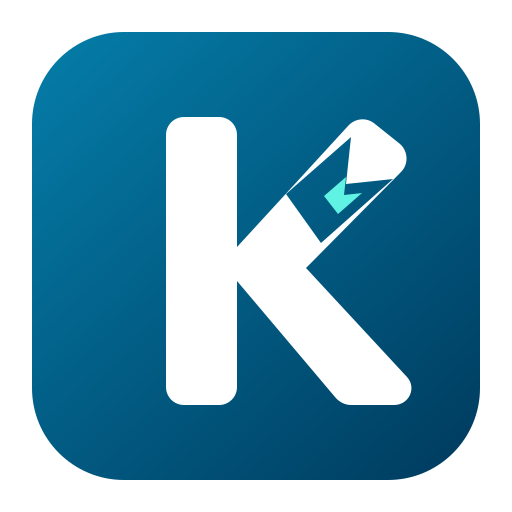
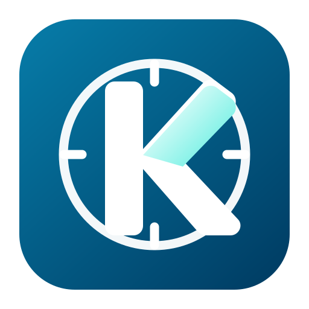

לוגו קודי - K עם כיוון מובנה
אין משולש מודבק. הכיוון/חץ יושב בתוך האלכסון של האות עצמה.
A - חץ מתוך האלכסון
B - קו מסלול על האלכסון

C - חיתוך קטן באות
D - K נקייה עם אלכסון מדורג

E - מצפן ו-K משולבת